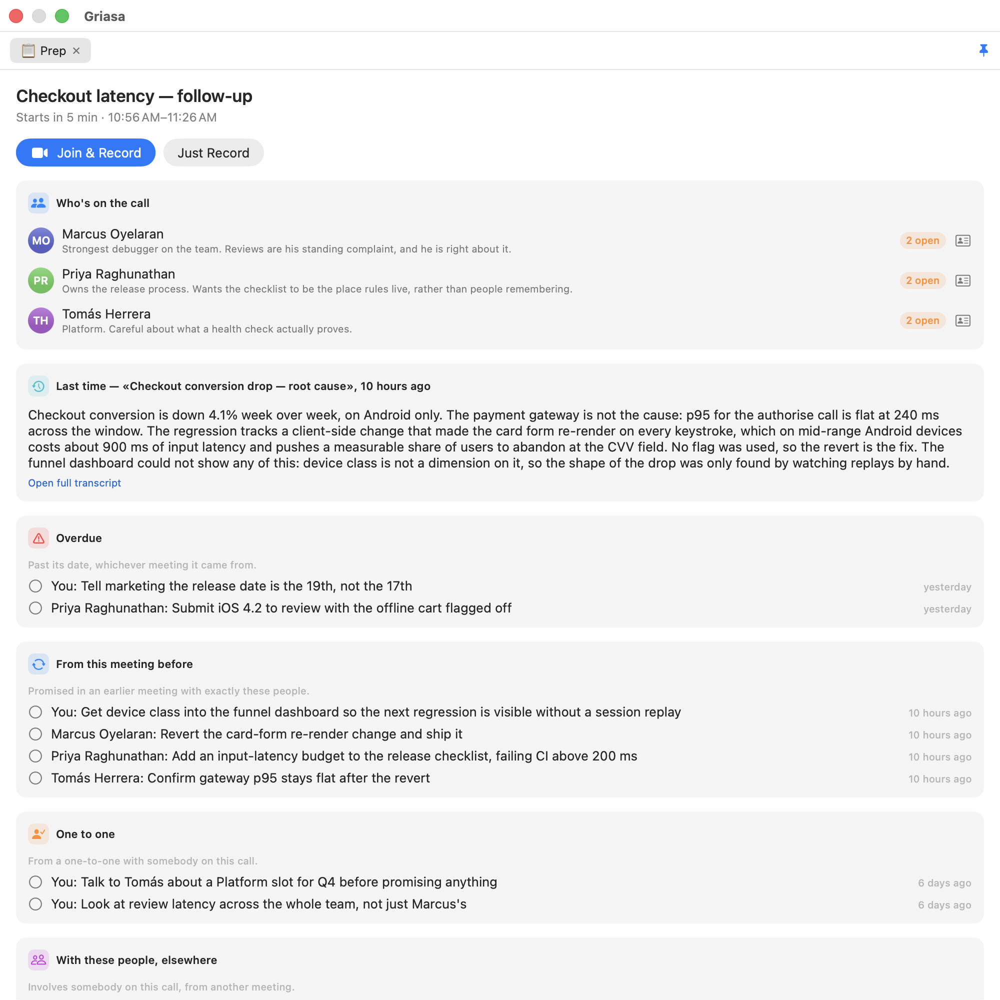
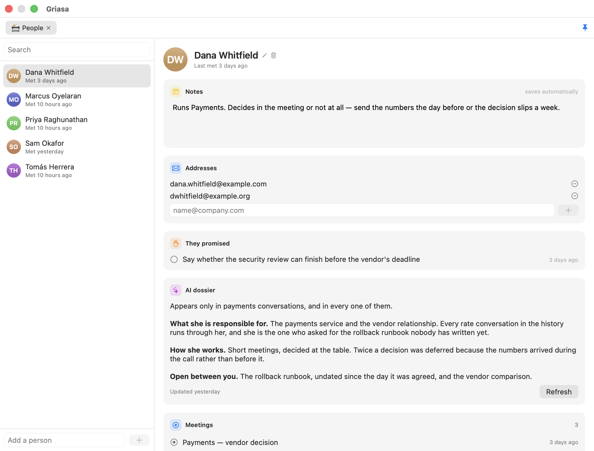
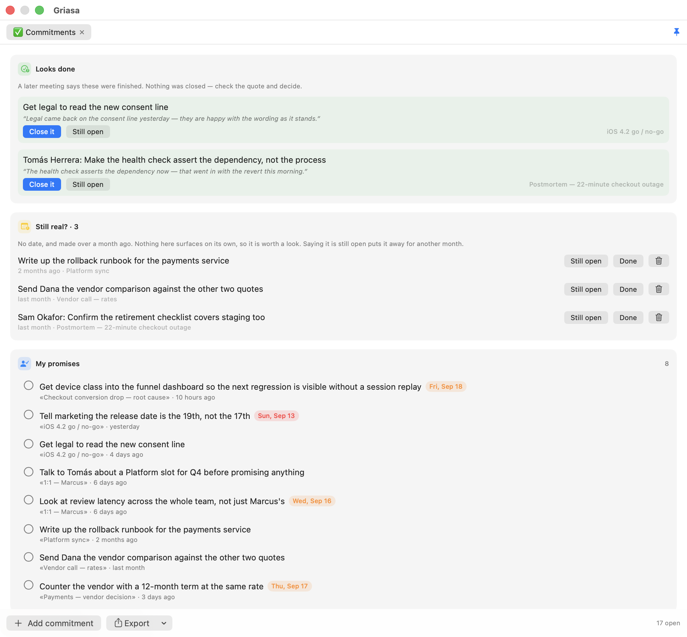

A promise with a date turns up when the date passes. One without a date never turns up at all.
Griasa records your meetings on your own Mac, works out who promised what, and puts the second kind in front of you before your next call with the person you owe. It is a menu-bar app, not a service.
Free, signed and notarized, macOS 14 or later. No account to create, no server to trust, and audio that never leaves the machine.

Before the call
The brief is about this meeting, not about everything you have ever owed anybody
Minutes before a calendar event, a panel appears with who is on it and what you last discussed. The promises are grouped by why you are being shown them, and one involving nobody in the room is not shown at all.
- Overdue, whichever meeting it came from — a date that has passed outranks tidy grouping.
- From this meeting before: promised in an earlier call with exactly these people.
- One to one: from a private conversation with somebody in the room.
- With these people, elsewhere: everything else that involves them.
- A button opens the Zoom or Meet link and starts recording in one go.

During
It records both sides, and it is listening to the screen as well as the room
The microphone and everything the Mac is playing are captured as two tracks, which is what lets the transcript say who was speaking. Type a note mid-call and it is woven in at its timecode.
- Remind me, from anything on screen (⌃⌥⌘R). Select a line in Slack, Telegram, Mail or a browser — or drag a rectangle over something that isn't selectable at all — and pick a time, or let the model read the deadline out of the sentence. It lands in Apple Reminders, so it reaches your phone.
- Every reminder remembers the app, window and browser tab it came from, so one click three days later scrolls you back to the paragraph.
- Hold a key and talk and the words appear in whatever app has focus, while you are still speaking.
- Typed abbreviations that expand in place with live values —
{slots:3}becomes three genuinely free slots from your calendar.

After
A list that only grows is a list nobody opens
Promises are pulled out of the transcript automatically — who took what on and by when — and split into what you owe and what you are owed. Then three things work against the pile.
- A later conversation can propose closing one, and has to quote the sentence that says it was finished. The quote is checked against the notes word for word.
- Nothing closes itself. Wrongly closing a promise means forgetting something you owe and hearing about it from the person you owed it to; wrongly leaving one open costs a line of noise. Those errors are not the same size.
- Anything old and undated gets asked about — still open, done, or it was never a commitment. No model involved: it is arithmetic on dates, so it works offline.
- One click sends any of them to Apple Reminders, or exports the lot as rows Todoist, Things and Linear will split up.

What the standard AI apps don't do
- Your own assistant can query it. Switch on Settings → System → AI assistants (MCP) and Claude Code, Codex or Cursor answer from your meeting history: open promises split into yours and theirs, one colleague with their notes and last conversation, meetings by search, one transcript, the next brief. Summary and transcript are deliberately separate questions, so asking about commitments cannot pull months of conversation into a cloud model by accident. Reads only — an assistant can change nothing.
- You can ask a model mid-sentence, in someone else's window. Type
;ai what's the capital of Armenia ;;inside a chat composer and the question is replaced in place by the answer. No window switch, no paste. - It uses the AI subscription you already pay for. If the
claudeorcodexCLI is installed and logged in, Griasa answers through it — no API key, no second subscription. Or point it at Ollama and the whole thing runs with nothing leaving the Mac. - It types into other people's apps, not into its own box. Most assistants give you a text area and a copy button. Griasa puts the words where your cursor already is, as you speak, and never overwrites what you typed yourself.
Most of the pieces are small. Any competent engineer could build any one of them in a day, and Apple could ship several with a snap of the fingers — worth saying plainly, because they could, and they have not. The part that is hard to copy is that these are one thing: the reminder you make during a call, the promises extracted from that same call, the page for the person who made them, and the brief that greets you before the next meeting with them all point at the same people and the same history. Five separate apps would need five integrations and would still lose the joins, because a join is not a feature any one of them owns.
What leaves your Mac, and what doesn't
- Audio never leaves it. Transcription is local — Apple's recognizer or
whisper.cpp. There is no Griasa server and no account to create. - Text goes only to the provider you configure — Anthropic, OpenAI, Gemini, or a local model via Ollama or LM Studio, in which case nowhere at all. If a local model fails, the app asks before it ever sends anything to a cloud key.
- The calendar is read, never written. Events tell it a meeting is about to start and who was invited. It creates nothing and changes nothing.
- What an assistant reads, it takes with it. The MCP endpoint is local and needs a token, but whatever your assistant reads goes wherever that assistant sends its context. That is why it is read-only and off until you switch it on.
- Every permission is auditable and optional. Microphone, screen recording, accessibility, calendar — each one says what still works if you decline it, and the code that asks is right there. Even a strict "no cloud recorders" IT policy has a compliant mode: local Whisper plus a local model.
Why this is harder than it looks
Dictation looks like a small app: capture audio, call a recognizer, insert the text. Every one of those three steps hid a problem that only appears once real people use it — and the meeting side has turned out no gentler.
The question cancelled itself with its own alert
A recording left running after everyone leaves is a common way to lose an hour of disk and a week of confidence, so a long silence raises "still recording — keep going?" and sounds the alert meant to reach you in the next room. It appeared, beeped, and vanished a second later, every time. The alert comes back in through the system-audio capture at −16.9 dBFS, 23 dB above the level that counts as somebody talking, so the watch heard itself and concluded the meeting had resumed. The obvious flag for this, excludesCurrentProcessAudio, does nothing — macOS does not play the alert as this app's audio.
The microphone's answer goes stale while nobody is listening
Recordings started coming out with no microphone track at all. An audio engine caches the format of the input device it first saw, so once a Bluetooth headset arrives the tap is built for a device that is no longer attached — and it fails in two ways, of which the second is the dangerous one. Measured from the log: with the engine at 48 kHz against hardware at 24 kHz, starting it threw an error; in another attempt it reported success and then delivered nothing at all. Nothing thrown, nothing logged, half a conversation recorded. The engine is now built at the moment the microphone is opened, and the first sound is waited for.
Typing live means never being allowed to take a word back
A recognizer revises its guess constantly — "тестирую" becomes "тестируй" becomes "тестирую" again. Retype the line each time and you delete whatever the user typed in between. The fix was a policy, not a patch: commit only the words two successive hypotheses agree on, append and never rewrite, and when they disagree, stall rather than invent.
The accessibility APIs lie
The clean way to replace text in another app is the accessibility API. Slack declares its composer writable and then silently ignores the write. Telegram declares it read-only, and reports emoji back as U+FFFC. Measured across three apps before designing anything — which is why synthetic keystrokes are the primary path and the tidy API is only an optimization for apps that tell the truth.
Local speech models get stuck in loops
One spoken sentence came back seven times in a row. That is a known failure mode of greedy decoding, and no amount of prompt tuning fixes it. It took an entropy threshold, a cap on carried context, and a collapser that can tell human emphasis — "no, no, no" — from a decoder going in circles.
Shipping it is its own engineering problem
An unsigned disk image passes Apple's notarization, accepts a stapled ticket, and reports success at every step — then Gatekeeper refuses it on the customer's Mac, because notarization is not a signature. Failures that only appear after both round trips to Apple are the expensive kind, so the release script now verifies the way a stranger's Mac will, and refuses to call a build shippable when it isn't.
Questions people actually ask
Does it work offline?
Dictation always — Whisper runs locally. Every AI feature too, if you point it at Ollama or LM Studio. With a cloud key, only the text of that one request is sent.
Which languages?
Everything Whisper supports, around a hundred, including mixed-language speech — dictate in your own language with English technical terms and both come out right.
Can Claude Code or Codex read my meetings?
Yes, once you switch on Settings → System → AI assistants (MCP). Eight questions are answered over an endpoint that listens only on this Mac and only with a token, which the settings screen copies out as a ready client configuration. Reads only.
Does it write to my calendar?
No. It reads events, so it knows a meeting is about to start and who was invited; it never creates or edits one. Reminders are different — those are created, but only when you ask for one.
Why does it need microphone, screen recording and accessibility permissions?
Microphone for dictation, screen recording for meeting audio and region capture, accessibility for reading selected text and typing results into other apps. Each is optional and the app tells you what stops working if you decline. It's all in the source.
Do I need an AI subscription?
Never to Griasa. You bring an API key — typically cents a day — or run local models with Ollama for nothing, or let it use the Claude or ChatGPT subscription you already pay for.
What do I get for the $29 that I don't get for free?
Nothing, and that's deliberate. The download is the same app either way: no locked features, no license check, and under GPL-3.0 there could not be a meaningful one — anyone with the source may legally remove such a check and share the result. The money pays for the Apple developer account and the hours.
Which puts Griasa squarely in the WinRAR tradition: the trial never ends, the reminder stays polite, and the thing keeps working forever whether or not you ever pay. WinRAR reportedly does perfectly well on that arrangement, which leaves the question nobody has answered in thirty years — who are the people who actually pay? You could be one of them.
Refunds?
Just ask, and it's returned with no questions. Since nothing is gated behind the payment, you keep using the app either way.
Use it for a week before you decide anything
The build is free, signed and notarized — download it and it opens with a double-click. The source is all here too, under GPL-3.0, and ./build.sh produces the same app if you would rather compile it yourself. $29 makes my day, any amount does, and none is fine too.
If it earns its place: